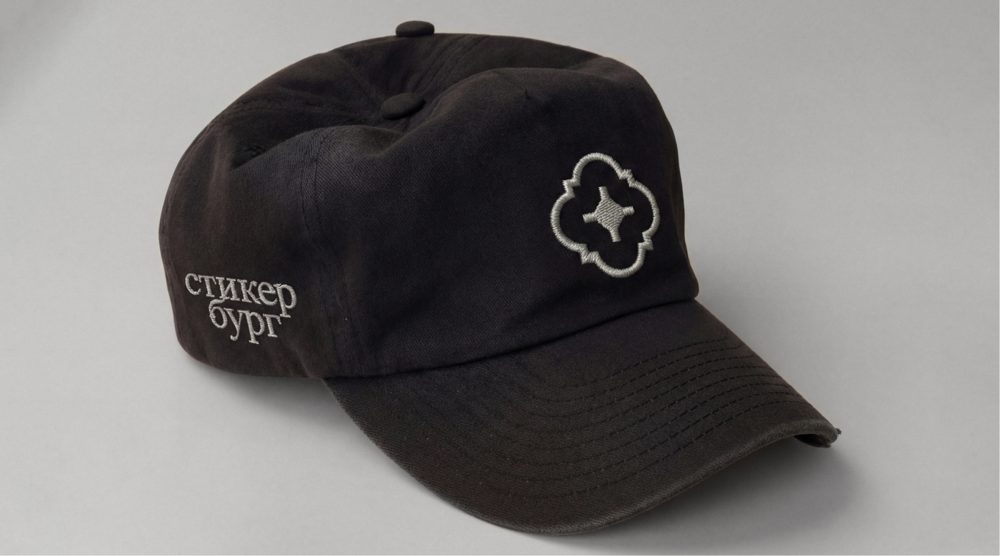
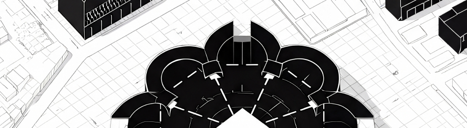
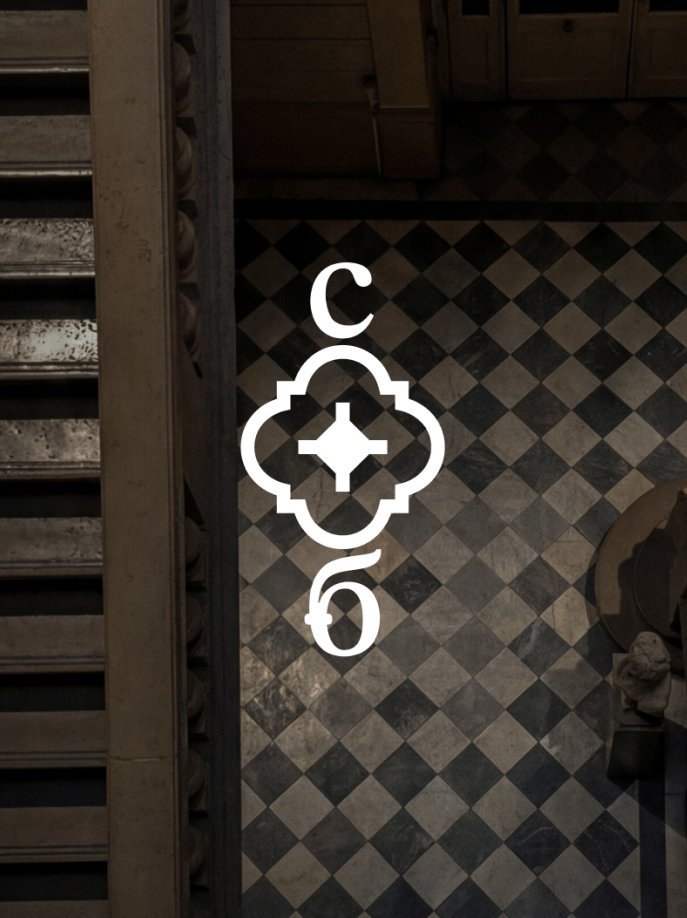
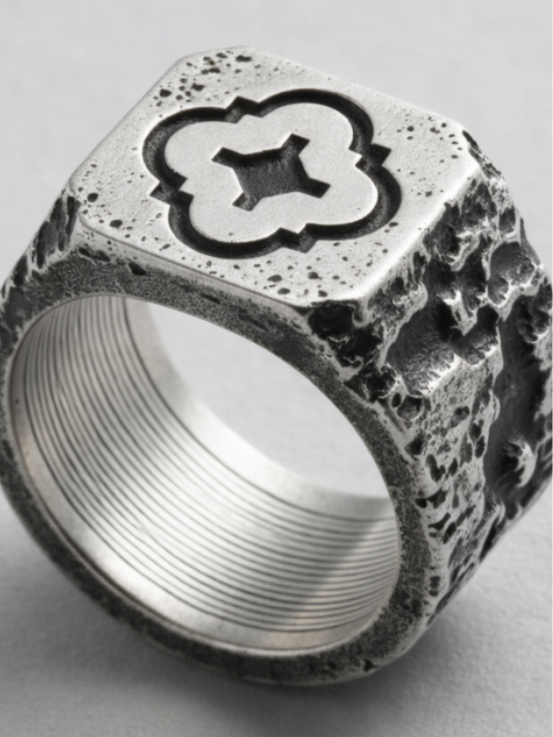
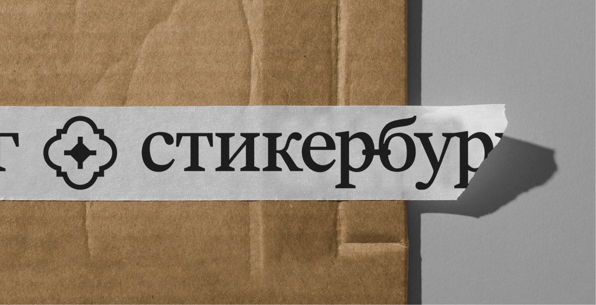
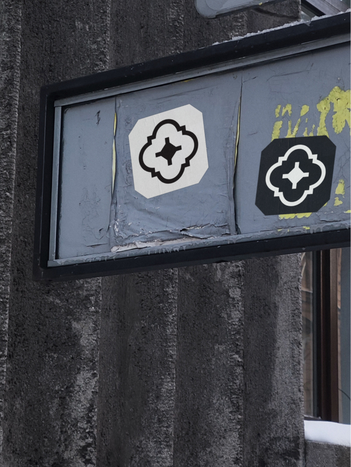
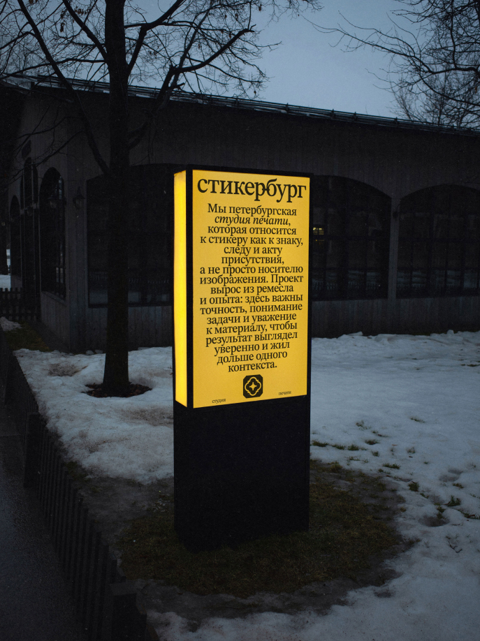
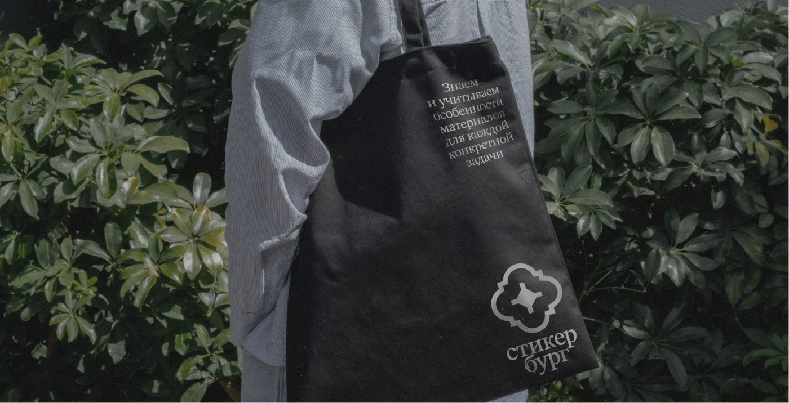

Stickerburg is a print studio specializing in stickers, with a strong craft-driven reputation and a long-standing identity. Over time, the logo stopped reflecting the level of expertise and maturity the studio had reached.






Stickerburg had relied on a single logo for years—a mark that had become familiar, trusted, and closely tied to the studio's identity. The challenge was to evolve it without losing that connection. The new system needed to feel simpler, more memorable, and technically reliable at small sizes, while introducing a fresh perspective and renewed sense of direction.
The solution was built around the idea of Saint Stickerburg—a fictional city shaped by signs, workshops, and printed artifacts. The identity preserves the spirit of the original brand while moving toward greater simplicity, stronger recognizability, and a more sticker-like character. A refined symbol, inspired by architectural forms and quality marks, creates a system that works effortlessly across print while maintaining the atmosphere that made the studio distinctive in the first place.